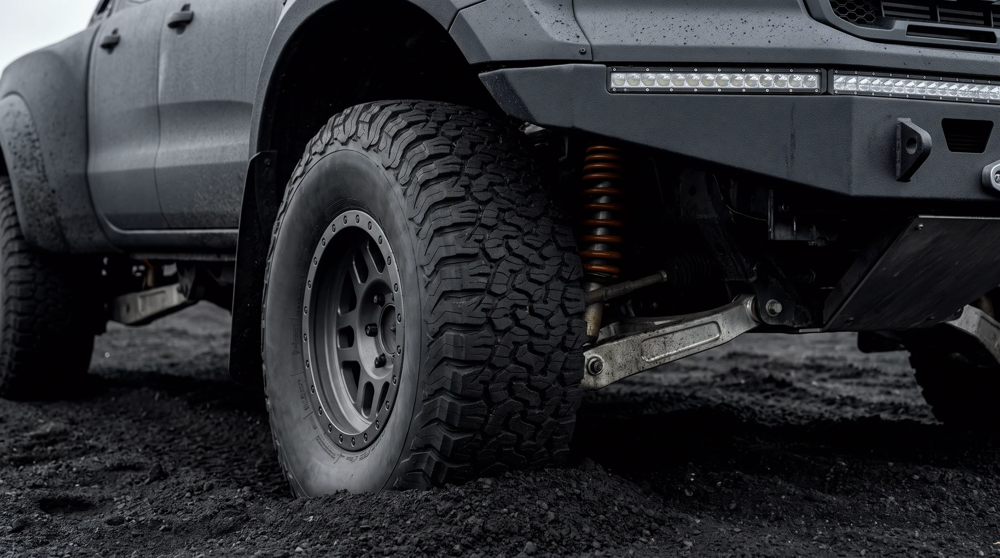
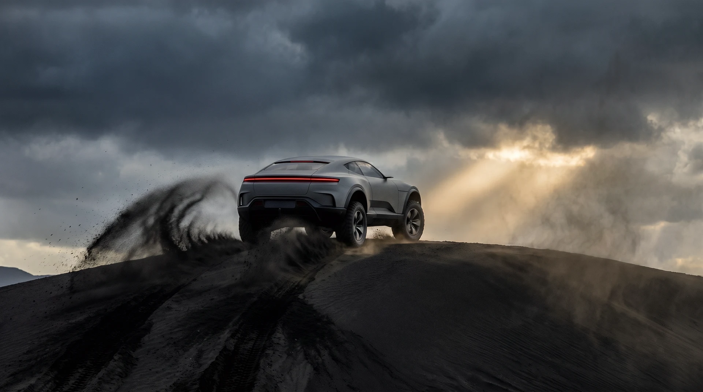

SC-03 · ASKA DUNES · BLACK ASH · —
BREKKA
The dunes eat momentum for a living, so the BREKKA carries too much of it on purpose: a diesel V8's plateau of torque, portal axles for ground the planet forgot to finish, and a hull that treats damage as commentary.
01 · THE ARGUMENT
DIESEL V8 · PORTAL AXLES · FOUR SEATS
Gravity is local.
Torque is universal.
Nothing about the Aska Dunes is reasonable: forty-degree faces of black glass ash that swallows wheels and reflects storms. The BREKKA answers with arithmetic — eleven hundred and fifty newton-metres against two and a quarter tonnes — and with geometry: portal axles that hoist the driveline out of the ash's reach.
Its top speed is gearing-limited and the ledger says so honestly. Out here the interesting number was never speed. It is the torque-to-mass line — the one that decides whether a dune is a wall or merely an inconvenience.
02 · UNDER LIGHT
DRAG THE GLARE ACROSS THE PAINT

LIGHT RIG · MANUAL
03 · ITS SECTOR
ASKA DUNES · 40° FACES · SURVEYED AFTER EVERY STORM
